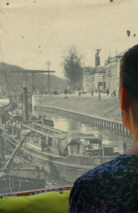
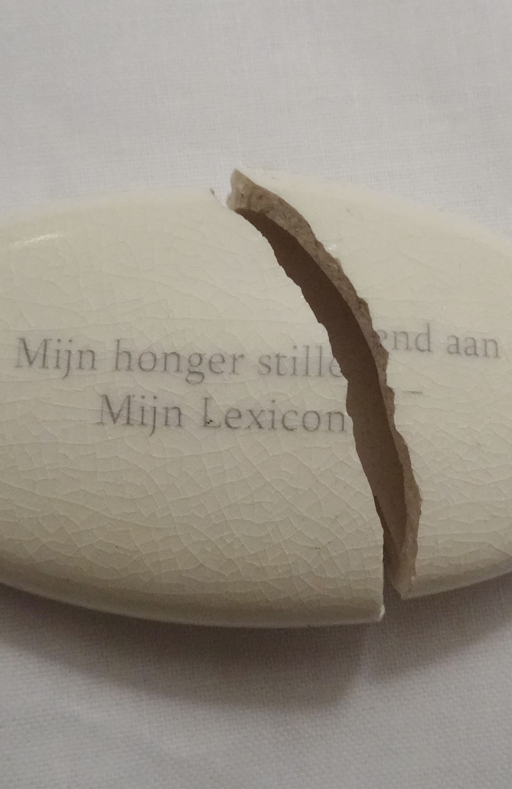

Brieven aan Vincent
Project in Artist in Residency in voormalige dierentuin in Emmen
Dat Wat Blijft

De winkel
Reïnventing paradise

Video-installatie Stedelijk Museum 's-Hertogenbosch
Het museum van de onschuld

Een filmisch drieluik

Picknick in het bos/Het woud der verwachting

Installatie Willem2fabriek Den Bosch
Neem hier een kijkje in boek 'In Tussentijd'

Boekproject i.s.m. Philip Peters